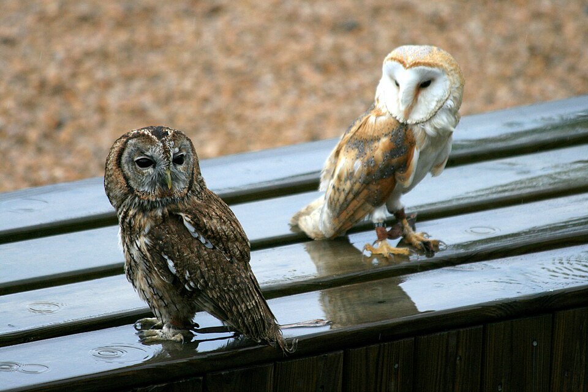
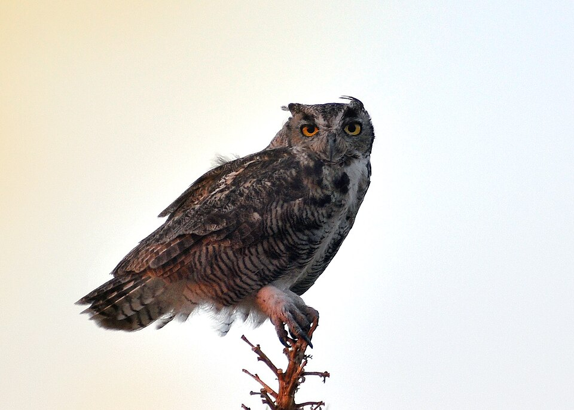
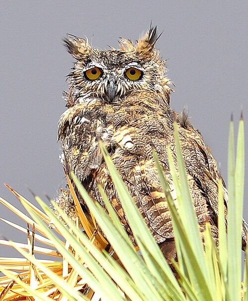
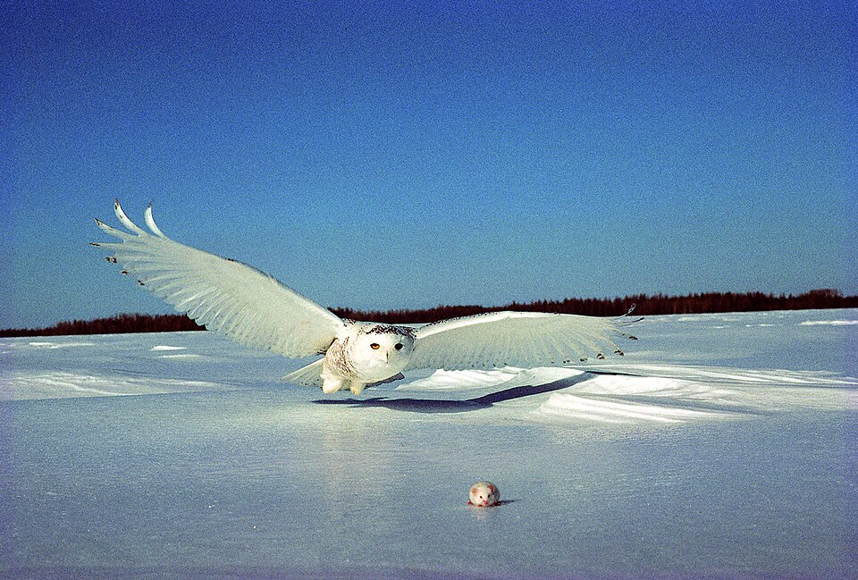

Introduction
Owls are birds from the order Strigiformes (/ˈstrɪdʒəfɔːrmiːz/), which includes over 200 species of mostly solitary and nocturnal birds of prey typified by an upright stance, a large, broad head, binocular vision, binaural hearing, sharp talons, and feathers adapted for silent flight. Exceptions include the diurnal northern hawk-owl and the gregarious burrowing owl.
Owls are divided into two families: the true (or typical) owl family, Strigidae, and the barn owl and bay owl family, Tytonidae. Owls hunt mostly small mammals, insects, and other birds, although a few species specialize in hunting fish. They are found in all regions of the Earth except the polar ice caps and some remote islands.
A group of owls is called a "parliament".

Anatomy
Owls possess large, forward-facing eyes and ear-holes, a hawk-like beak, a flat face, and usually a conspicuous circle of feathers, a facial disc, around each eye. The feathers making up this disc can be adjusted to sharply focus sounds from varying distances onto the owls' asymmetrically placed ear cavities. Most birds of prey have eyes on the sides of their heads, but the stereoscopic nature of the owl's forward-facing eyes permits the greater sense of depth perception necessary for low-light hunting. Owls have binocular vision, but they must rotate their entire heads to change the focus of their view because, like most birds, their eyes are fixed in their sockets. Owls are farsighted and cannot clearly see anything nearer than a few centimetres of their eyes. Caught prey can be felt by owls with the use of filoplumes—hairlike feathers on the beak and feet that act as "feelers". Their far vision, particularly in low light, is exceptionally good.
Owls can rotate their heads and necks as much as 270°. Owls have 14 neck vertebrae—humans have only seven—and their vertebral circulatory systems are adapted to allow them to rotate their heads without cutting off blood to the brain. Specifically, the foramina in their vertebrae through which the vertebral arteries pass are about ten times the diameter of the artery, instead of about the same size as the artery, as is the case in humans; the vertebral arteries enter the cervical vertebrae higher than in other birds, giving the vessels some slack, and the carotid arteries unite in a very large anastomosis or junction, the largest of any bird's, preventing blood supply from being cut off while they rotate their necks. Other anastomoses between the carotid and vertebral arteries support this effect.
The smallest owl—weighing as little as 31 g (1+3⁄32 oz) and measuring some 13.5 cm (5+1⁄4 in)—is the elf owl (Micrathene whitneyi). Around the same diminutive length, although slightly heavier, are the lesser known long-whiskered owlet (Xenoglaux loweryi) and Tamaulipas pygmy owl (Glaucidium sanchezi). The largest owls are two similarly sized species; the Eurasian eagle-owl (Bubo bubo) and Blakiston's fish owl (Ketupa blakistoni). The largest females of these species are 71 cm (28 in) long, have a 190 cm (75 in) wing span, and weigh 4.2 kg (9+1⁄4 lb).

Hunting Adaptations
All owls are carnivorous birds of prey and live on diets of insects, small rodents and lagomorphs. Some owls are also specifically adapted to hunt fish. They are very adept in hunting in their respective environments. Since owls can be found in nearly all parts of the world and across a multitude of ecosystems, their hunting skills and characteristics vary slightly from species to species, though most characteristics are shared among all species.
Most owls share an innate ability to fly almost silently and also more slowly in comparison to other birds of prey. Most owls live a mainly nocturnal lifestyle and being able to fly without making any noise gives them a strong advantage over prey alert to the slightest sound in the night. A silent, slow flight is not as necessary for diurnal and crepuscular owls given that prey can usually see an owl approaching. Owls' feathers are generally larger than the average birds' feathers, have fewer radiates, longer pennulum, and achieve smooth edges with different rachis structures. Serrated edges along the owl's remiges bring the flapping of the wing down to a nearly silent mechanism. The serrations are more likely reducing aerodynamic disturbances, rather than simply reducing noise. The surface of the flight feathers is covered with a velvety structure that absorbs the sound of the wing moving. These unique structures reduce noise frequencies above 2 kHz, making the sound level emitted drop below the typical hearing spectrum of the owl's usual prey and also within the owl's own best hearing range. This optimizes the owl's ability to silently fly to capture prey without the prey hearing the owl first as it flies, and to hear any noise the prey makes. It also allows the owl to monitor the sound output from its flight pattern.
Eyesight is a particular characteristic of the owl that aids in nocturnal prey capture. Owls are part of a small group of birds that live nocturnally, but do not use echolocation to guide them in flight in low-light situations. Owls are known for their disproportionally large eyes in comparison to their skulls. An apparent consequence of the evolution of an absolutely large eye in a relatively small skull is that the eye of the owl has become tubular in shape. This shape is found in other so-called nocturnal eyes, such as the eyes of strepsirrhine primates and bathypelagic fishes. Since the eyes are fixed into these sclerotic tubes, they are unable to move the eyes in any direction. Instead of moving their eyes, owls swivel their heads to view their surroundings. Owls' heads are capable of swiveling through an angle of roughly 270° in either direction, easily enabling them to see behind them without relocating the torso. This ability keeps bodily movement at a minimum, thus reduces the amount of sound the owl makes as it waits for its prey. Owls are regarded as having the most frontally placed eyes among all avian groups, which gives them some of the largest binocular fields of vision. Owls are farsighted and cannot focus on objects within a few centimetres of their eyes. These mechanisms are only able to function due to the large-sized retinal image. Thus, the primary nocturnal function in the vision of the owl is due to its large posterior nodal distance; retinal image brightness is only maximized to the owl within secondary neural functions. These attributes of the owl cause its nocturnal eyesight to be far superior to that of its average prey.

Behavior
Most owls are nocturnal, actively hunting their prey in darkness. Several types of owls are crepuscular—active during the twilight hours of dawn and dusk; for example the pygmy owls (Glaucidium). A few owls are active during the day, also; examples are the burrowing owl (Speotyto cunicularia) and the short-eared owl (Asio flammeus).
Much of the owls' hunting strategy depends on stealth and surprise. Owls have at least two adaptations that aid them in achieving stealth. First, the dull coloration of their feathers can render them almost invisible under certain conditions. Secondly, serrated edges on the leading edge of owls' remiges muffle an owl's wing beats, allowing an owl's flight to be practically silent. Some fish-eating owls, for which silence has no evolutionary advantage, lack this adaptation.
An owl's sharp beak and powerful talons allow it to kill its prey before swallowing it whole (if it is not too big). Scientists studying the diets of owls are helped by their habit of regurgitating the indigestible parts of their prey (such as bones, scales, and fur) in the form of pellets. These "owl pellets" are plentiful and easy to interpret, and are often sold by companies to schools for dissection by students as a lesson in biology and ecology.